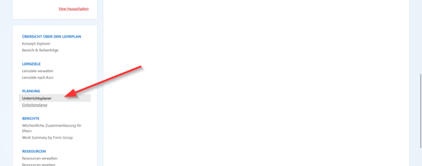

2. Einheiten zum Lehrplan Hinzufügen
Beginnen Sie mit der Vorbereitung und Planung des Wochenplans, indem Sie Einheiten des zu studierenden Buches hinzufügen. Klicken Sie dazu auf 'Planner'..
Danach wählen Sie "Unterrichtsplaner" aus.

Wählen Sie oben links das Kapitel aus, dem Sie die Einheiten hinzufügen möchten.
Klicken Sie auf Hinzufügen
Geben Sie anschließend den Namen der Lektion sowie Ihre Notizen ein und klicken Sie auf „Senden“, um Ihre Auswahl zu speichern.
Vergessen Sie nicht, die Einheit für die beabsichtigte Klasse freizugeben, bevor Sie die Änderungen speicheren.
Kehren Sie zur Startseite zurück und klicken Sie auf „Planer“, um die gewünschte Klasse auszuwählen, zu der Sie eine Lektion hinzufügen möchten.
Dann klicken Sie auf "Hinzufügen", um eine neue Lektion hinzuzufügen
Bitte unterscheiden Sie zwischen dem Hinzufügen einer Einheit und dem Hinzufügen einer Lektion zur Einheit.
Wählen Sie dann die Einheit aus und geben Sie den Namen der Lektion ein, sowie etwaige Übungen oder Aufgaben, falls vorhanden.
Vergessen Sie nicht, am Ende auf "Senden" zu klicken. Sie finden dann immer alle hinzugefügten Lektionen im im "Planer".